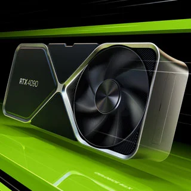
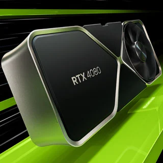

Mesma linha, diferentes GPUs! Comparamos as RTX 40 ASUS ROG Strix!
Como um mesmo projeto dimensiona para diferentes chips gráficos
Hoje nós vamos fazer um comparativo diferente. Normalmente colocamos diferentes chips gráficos para comparar a o desempenho entre múltiplas opções do mercado, ou marcas rivais para ver qual se sai melhor em performance. Hoje nós vamos ter três modelos da série GeForce RTX 40, mas com uma coisa em comum: todas são da mesma linha, a ASUS ROG Strix.
Nós temos todo o line-up atual das placas com arquitetura Lovelace, partindo da RTX 4070 Ti, passando pela RTX 4080 e por fim incluindo a topo de linha RTX 4090. Serão comparados:
- ROG Strix GeForce RTX 4090 OC Edition 24GB GDDR6X- site oficial
- ROG Strix GeForce RTX 4080 16GB GDDR6X OC Edition - site oficial
- ROG Strix GeForce RTX 4070Ti 12GB GDDR6X OC Edition - site oficial
Projeto ASUS ROG Strix
A Nvidia cria um projeto que traz as especificações que precisam ser atendido pelas fabricantes de placas de vídeos com seus chips GeForce, porém também abre espaço para as fabricantes desenvolverem suas melhorias em critérios como arrefecimento de calor e alimentação de energia. Vamos mostrar o que a ASUS fez no projeto ROG Strix de suas RTX 40, que são a referência desse experimento.
Para dissipar calor, as RTX 40 ROG Strix traz um design enorme, ocupando 3,5 slots. O destaque é o uso de uma câmara de vapor com dissipador de calor fresado para aumentar a eficiência. A empresa fez um desnível na câmera de vapor para acomodar os heatpipes, diferente do design tradicional que simplesmente prensa eles contra a câmera de vapor. Isso reduz em 5ºC a dissipação de calor de um chip de 500W. A empresa também melhorou as suas fans, com um design axial que agora tem um diâmetro levemente maior, ampliando o fluxo de ar em 23% e a pressão de ar em quase 20%.
Outra mudança no design é tanto funcional quanto estética. A ROG Strix tem esse porte parrudo graças a uma construção metálica externa com visual vazado, que também serve para maximizar o fluxo de ar para dentro das estruturas de arrefecimento. O PCB bastante curto dessas placas, que vai na direção inversa do tamanho a placa, auxilia ao
Agora comentando das diferenças entre os três projetos, vemos a ASUS redimensionando os componentes de acordo com as demandas de cada um dos chips usados. Na alimentação de energia também é perceptível a progressiva redução nas estruturas de alimentação de energia.
Outra mudança é
Comparativo
|  |  | ||
| Intel Core NVIDIA GeForce RTX 4090 |
Intel Core NVIDIA GeForce RTX 4080 |
Intel Core NVIDIA GeForce RTX 4070 Ti |
Preços
| Preço no lançamento | U$ 1.599,00 | U$ 1.199,00 | U$ 799,00 |
|---|---|---|---|
| Preço atualizado | R$ 14.999,00 | R$ 10.499,00 | U$ 799,00 |
Especificações da GPU
| Processo de fabricação | 5nm | 5nm | 5nm |
|---|---|---|---|
| PCI-Express bus | 4.0 x16 | 4.0 x16 | 4.0 x16 |
| Chip | Ada Lovelace (AD102) | Ada Lovelace (AD103) | Ada Lovelace (AD104) |
| Clock do GPU | 2235 MHz | 2205 MHz | 2310 MHz |
| Clock do GPU (Turbo) | 2520 MHz | 2505 MHz | 2610 MHz |
Especificações das Memórias
| Tecnologia da RAM | GDDR6X | GDDR6X | GDDR6X |
|---|---|---|---|
| Interface de largura de BUS | 384-bit | 256-bit | 192-bit |
| Quantidade de RAM | 24 GB | 16 GB | 12 GB |
| Clock das memórias | 1325 MHz | 1400 MHz | 1313 MHz |
| Clock efetivo | 21200 MHz | 22400 MHz | 21000 MHz |
| Largura de banda | 1.018 GB/s | 716,8 GB/s | 504,2 GB/s |
Características Gerais
| Shading Units | 16384 | 9728 | 7680 |
|---|---|---|---|
| TMUs | 512 | 304 | 240 |
| ROPs | 192 | 112 | 80 |
| Pixel Rate | 483,8 GPixel/s | 280,6 GPixel/s | 208,8 GPixel/s |
| Texture Rate | 1.290 GTexel/s | 761,5 GTexel/s | 626,4 GTexel/s |
| Performance de pontos flutuantes FP16 | 82,58 TFLOPS | 48,74 TFLOPS | 40,09 TFLOPS |
Design
| Pinos de alimentação | 1x 16 pinos PCIe 5.0 | 1x 16 pinos PCIe 5.0 | 1x 16 pinos PCIe 5.0 |
|---|---|---|---|
| Suporte à combinação de placas | NÃO | NÃO | NÃO |
| Tipo de Slot | Três slots | Três slots | Dois slots |
| Comprimento da placa | 336 mm | 336 mm | 336 mm |
| TDP | 450 W | 320 W | 285 W |
| Fonte recomendada | 850 W | 750 W | 600 W |
| Conexões de vídeo | 3x DisplayPort 1.4a, 1x HDMI 2.1 | 3x DisplayPort 1.4a, 1x HDMI 2.1 | 3x DisplayPort 1.4a, 1x HDMI 2.1 |
Recursos
| DirectX | 12 Ultimate | 12 Ultimate | 12 Ultimate (12_2) |
|---|---|---|---|
| OpenCL | 3.0 | 3.0 | 3.0 |
| OpenGL | 4.6 | 4.6 | 4.6 |
| Shader | 6.6 | 6.6 | 6.6 |
Performance
Rodamos testes com as três placas, e começando com Call of Duty Modern Warfare II podemos ver o projeto ROG Strix lidando com os três chips
Todos os projetos lidam com eficiência com as demandas de seus respectivos chips, algo que não é apenas esperado, mas sim o mínimo que queremos em uma placa entusiasta como esses modelos. Mas é quando brincamos com recursos como o overclock que as coisas começam a diferenciar essas placas mais avançadas de projetos mais básicos.
Então é aí que vemos como um projeto avançado como este se diferencia. Na performance fora da caixa, ele entrega algo bem próximo a demais modelos com o mesmo chip, mas ele traz margens devido ao seu projeto avançado para ir mais longe.
Isso faz valer a pena?
A RTX 4090 sai por R$ 15 mil, com modelos mais básicos sendo encontrados por R$ 11 mil. A RTX 4080 sai por R$ 12 mil, com modelos mais baratos com este chip custando pouco acima dos R$ 8 mil. E por fim, a RTX 4070 Ti ROG está na faixa dos R$ 8 mil, quando as mais básicas com esse chip já são encontradas por R$ 6.3 mil.
É impressionante ver um projeto de arrefecimento que mantém até o maior mais potente chip gráfico extremamente frio, e mesmo o overclock mal mexe nesse cenário. Mas em contrapartida, o modelo RTX 4070 Ti ROG muitas vezes quase cola no preço das RTX 4080 mais baratas, bem como as RTX 4080 ROG Strix quase pagam uma RTX 4090.
Mesmo dando margens impressionantes para desempenho, não é por uma relação entre custo e benefício que você deve optar por um produto como essas GeForce ROG Strix. Indepentendente do overclock que você fizer, nenhuma RTX 4080 alcança uma RTX 4090.
O motivo para optar por uma placa como essas testadas no artigo é outro: levar o chip GeForce RTX ao limite, com muita margem de arrefecimento e alimentação de energia disponíveis. E também outros benefícios deste tipo de projeto, como um belíssimo visual.